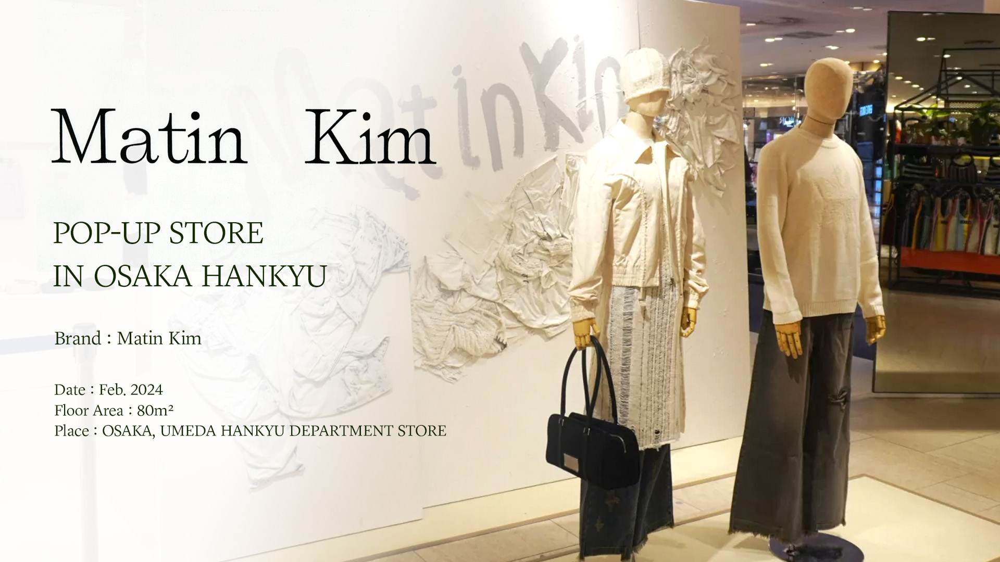
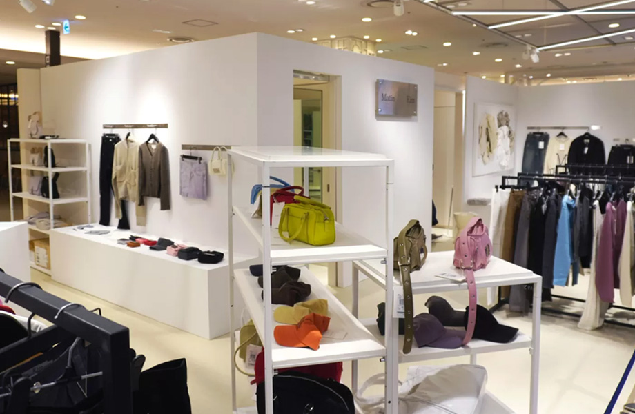
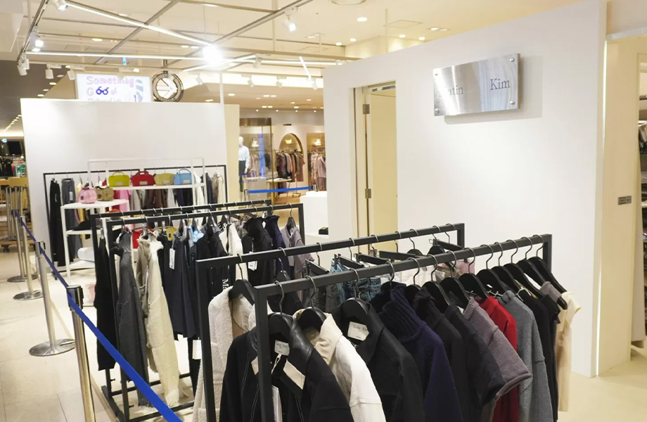

타 브랜드에 비해 집객 수가 많고 웨이팅이 길었던 점을 고려하여, 내부 공간을 여유롭게 구성하고 외부에서도 매장 내부 아이템이 잘 노출될 수 있도록 구조를 설계하였습니다.
브랜드의 정체성을 강조하기 위해 화이트 베이스를 중심으로 공간을 구성하고, 메탈릭한 소재의 장식물을 활용하여 세련된 분위기를 연출하였습니다.
또한, 포토존에는 해체주의적 디자인 요소를 적용하여 브랜드의 실험적인 감각을 부각시켰습니다.

공간 디자인 (기여도 : 10-20%)
・ 브랜드 공간 디자이너 및 백화점 관계자와 협의하며
공간 구성 조율
・ 랜딩 요소를 반영한 인테리어안 제시
(장식 요소 및 집기 선정)
협력사 관리 (기여도 : 30-35%)
・ 설치 및 제작업체, 집기 렌탈사 등 협력업체
전반과의 커뮤니케이션 및 관리
클라이언트 대응 (기여도 : 60-65%)
・ 브랜드와의 주요 커뮤니케이션 담당
・ 이벤트 준비 및 진행 관리
이벤트 기획 (기여도 : 15-20%)
・ 구매자 이벤트 및 LINE추가 이벤트 기획 참여
・ 사은품 선정에 대한 의견 제시
・ 구매 금액 기준 및 사은품 선정에 대한 의견 제시